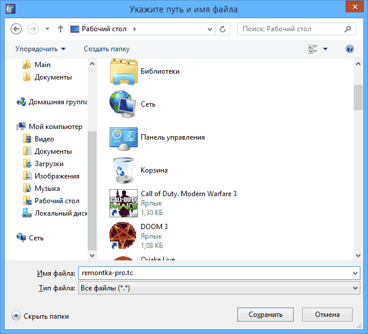
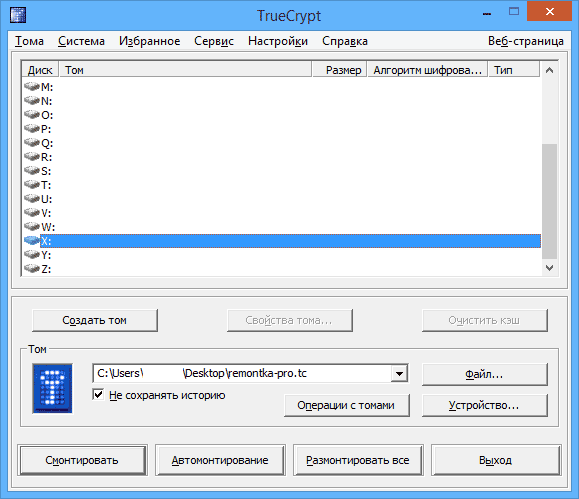

TrueCrypt — инструкция для начинающих
05.05.2014 для начинающих | программы
Если вам нужен простой и очень надежный инструмент для шифрования данных (файлов или целых дисков) и исключения доступа к ним посторонних, TrueCrypt — это, пожалуй, лучший инструмент для этих целей.
В этой инструкции — простой пример использования TrueCrypt для создания зашифрованного «диска» (тома) и последующей работы с ним. Для большинства задач по защите своих данных, описанного примера будет достаточно для последующего самостоятельного использования программы.
Обновление: TrueCrypt больше не разрабатывается и не поддерживается. Рекомендую использовать VeraCrypt (для шифрования данных на не системных дисках) или BitLocker (для шифрования диска с Windows 10, 8 и Windows 7).
Где скачать TrueCrypt и как установить программу
Вы можете скачать TrueCrypt бесплатно с официального сайта на странице http://www.truecrypt.org/downloads. Программа доступна в версиях для трех платформ:
Сама установка программы представляет собой простое согласие со всем, что предлагается и нажатие кнопки «Next» (Далее). По умолчанию, утилита на английском языке, если же вам нужен TrueCrypt на русском, загрузите русский язык со страницы http://www.truecrypt.org/localizations, после чего установите его следующим образом:
На этом, установка TrueCrypt завершена, переходим к руководству по использованию. Демонстрация производится в ОС Windows 8.1, но и в предыдущих версиях что-либо отличаться не будет.
Использование TrueCrypt
Итак, вы установили и запустили программу (на скриншотах будет TrueCrypt на русском языке). Первое, что потребуется сделать — создать том, нажмите соответствующую кнопку.
Откроется мастер создания томов TrueCrypt со следующими вариантами создания тома:
Выбираем «зашифрованный файловый контейнер», самый простой из вариантов, достаточный для того, чтобы разобраться с принципом работы шифрования в TrueCrypt.
После этого будет предложено выбрать — обычный или скрытый том следует создать. Из пояснений в программе, думаю, ясно в чем отличия.
Следующий шаг — следует выбрать размещение тома, то есть папку и файл, где он будет располагаться (поскольку мы выбрали создание файлового контейнера). Нажмите «Файл», перейдите к папке, в которой предполагаете хранить зашифрованный том, введите желаемое имя файла с расширением .tc (см. на картинке ниже), нажмите «Сохранить», а затем — «Далее» в мастере создания томов.

Следующий шаг настройки — выбор параметров шифрования. Для большинства задач, если вы не секретный агент, достаточно стандартных настроек: можете не сомневаться, без специального оборудования, раньше чем через несколько лет никто не сможет посмотреть ваши данные.
Следующим этапом будет задание размера зашифрованного тома, в зависимости от того, какой объем файлов вы планируете хранить в секрете.
Нажмите «Далее» и вас попросят ввести пароль и подтверждение пароля на том. Если вы хотите действительно защитить файлы, следуйте рекомендациям, которые вы увидите в окне, там все подробно описано.
На этапе форматирования тома вам предложат перемещать мышь по окну для генерации случайных данных, которые помогут увеличить стойкость шифрования. Кроме этого, вы можете задать файловую систему тома (например, для хранения файлов больше 4 Гб следует выбрать NTFS). После того, как это сделано, нажмите «Разметить», подождите немного, а после того, как увидите, что том был создан, выйдите из мастера создания томов TrueCrypt.
Работа с зашифрованным томом TrueCrypt
Следующий шаг — смонтировать зашифрованный том в системе. В главном окне TrueCrypt выберите букву диска, которая будет присвоена зашифрованному хранилищу и, нажав «Файл» укажите путь к файлу .tc, который вы создавали ранее. Нажмите кнопку «Смонтировать», а затем укажите пароль, который вы устанавливали.
После этого, смонтированный том отразится в главном окне TrueCrypt, а если вы откроете проводник или «Мой компьютер», вы увидите там новый диск, который и представляет ваш зашифрованный том.
Теперь, при любых операциях с этим диском, сохранении файлов на него, работе с ними, они шифруются «на лету». После работы с зашифрованным томом TrueCrypt, в главном окне программы нажмите «Размонтировать», после этого, до очередного ввода пароля, ваши данные будут недоступны посторонним.